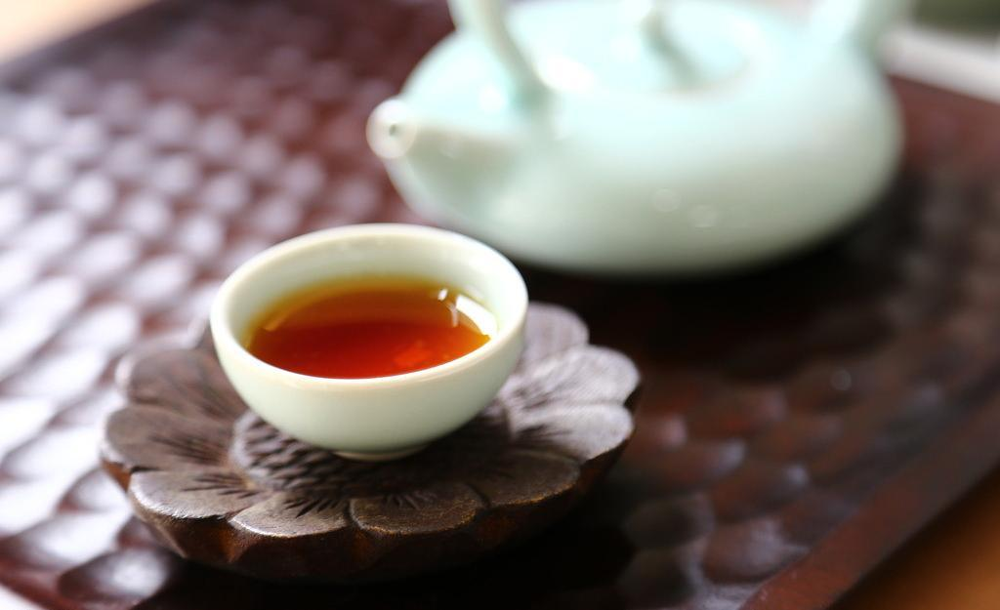

产品介绍
-

岩茶
岩岩有茶，非岩不茶”，岩茶因而得名。属半发酵茶，青茶（乌龙茶），以“岩骨花香”的独特岩韵著称。主产区为中国福建武夷山茶区。武夷山茶区坐落在福建省东北部，有“奇秀 甲于东南”之誉。群峰相连，峡谷纵横，九曲溪萦回其间，气候温和，冬暖夏凉，雨量充沛。武夷山悬崖绝壁，深坑巨谷。利用岩凹、石隙、石缝，沿边砌筑石岸，构筑“盆栽式”茶园。武夷岩茶也是中国十大名茶之一，大红袍是武夷岩茶之王
+查看大图 -

白茶
白茶，属微发酵茶，是中国茶农创制的传统名茶。中国六大茶类之一。指一种采摘后，不经杀青或揉捻，只经过晒或文火干燥后加工的茶。具有外形芽毫完整，满身披毫，毫香清鲜，汤色黄绿清澈，滋味清淡回甘的的品质特点。 属轻微发酵茶，是中国茶类中的特殊珍品。
+查看大图 -

碧螺春
古人们又称碧螺春为“功夫茶”、“新血茶”。高级的碧螺春，茶芽之细嫩0.5公斤干茶需要茶芽6-7万个。炒成后的干茶条索紧结，白毫显露，色泽银绿，翠碧诱人，卷曲成螺，产于春季，故名“碧螺春”。此茶冲泡后杯中白云翻滚，清香袭入，是中国的名茶。
+查看大图 -
红茶
祁门红茶，简称祁红，是中国传统功夫红茶的珍品，为历史名茶，出产于19世纪后期，是世界三大高香茶之一，有“茶中英豪”，“群芳最”，“王子茶”等美誉。祁门红茶依其品质高低分为1～7级，主要产于安徽省祁门县，与其毗邻的石台，东至，黟县及贵池等县也有少量生产，主要出口英国，荷兰，德国，日本，俄罗斯等几十个国家和地区，多年来一直是中国的国事礼茶。
+查看大图 -

茉莉花茶
茉莉花茶是将茶叶和茉莉鲜花进行拼和、窨制，使茶叶吸收花香而成的茶叶，其香气鲜灵持久、滋味醇厚鲜爽、汤色黄绿明亮、叶底嫩匀柔软。经过一系列工艺流程窨制而成的茉莉花茶，具有安神、解抑郁、健脾理气、抗衰老防辐射、提高机体免疫力的功效。
+查看大图